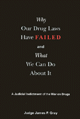

A devastating indictment of the War on Drugs
A devastating indictment of the War on Drugs


 A devastating indictment of the War on Drugs
A devastating indictment of the War on Drugs

|  |
Why Our Drug Laws Have Failed and What We Can Do About ItA Judicial Indictment of the War on DrugsJudge James P. Graypaper EAN: 978-1-56639-860-2 (ISBN: 1-56639-860-6) |
"As provocative and topical as the film Traffic, here's a scathing jeremiad against the war on drugs, notable both for the author's position and for the sustained anger of its argument."
—Publishers Weekly (starred review)
Our drug prohibition policy is hopeless, just as Prohibition, our alcohol prohibition policy, was before it. Today there are more drugs in our communities and at lower prices and higher strengths than ever before.
We have built large numbers of prisons, but they are overflowing with non-violent drug offenders. The huge profits made from drug sales are corrupting people and institutions here and abroad. And far from being protected by our drug prohibition policy, our children are being recruited by it to a lifestyle of drug use and drug selling.
Judge Gray�s book drives a stake through the heart of the War on Drugs. After documenting the wide-ranging harms caused by this failed policy, Judge Gray also gives us hope. We have viable options. The author evaluates these options, ranging from education and drug treatment to different strategies for taking the profit out of drug-dealing.
Many officials will not say publicly what they acknowledge privately about the failure of the War on Drugs. Politicians especially are afraid of not appearing "tough on drugs." But Judge Gray�s conclusions as a veteran trial judge and former federal prosecutor are reinforced by the testimonies of more than forty other judges nationwide.
Excerpt available at www.temple.edu/tempress
"However harmful the ingestion of drugs are to their users, the attempt to prohibit drugs has made matters far worse, threatening our basic rights to life, liberty and property. That is Judge Gray's thesis in this important book and he cites overwhelming evidence to support it. His proposals to improve the situation do not go as far as I would like, but they are all feasible and in the right direction. If adopted, they would produce a major improvement."
—Milton Friedman
"The war on drugs cannot be a war on discussion of this problem. We can fight drug use and abuse and still explore viable options. Judge Gray illuminates options and in the process will promote necessary discussion of them."
—George P. Shultz
"It's all here! A stinging indictment of today's drug strategies and a rallying cry around new strategies for tomorrow."
—Gary E. Johnson, Governor of New Mexico
"It has been said that in public policy development we must distinguish between ideas that sound good and good ideas that are sound. In this book, Judge Gray provides sound ideas for a more effective national drug control policy. He recognizes that the War on Drugs needs new thinking for this new century."
—Kurt L. Schmoke, Former Mayor of the City of Baltimore
"Judge Gray's thorough and scholarly work, based as it is on his personal experience, should help considerably to improve our impossible drug laws. [His] book drives a stake through the heart of the failed War on Drugs and gives us options to hope for in the battles to come"
—Walter Cronkite
"...as engrossing and highly readable as its title is obvious. An encyclopedia of facts and figures underscoring our failed policies, together with a visionary path out of this mess. Gray's book catalogs the scandalous waste of resources that we continue to throw at the criminalization of a problem that a strong majority of Californians now understand is fundamentally a social and public health issue. Gray also makes good on his guarantee set forth in the Introduction: No one who reads the book will favor a continuation of our present drug policy, unless that person has a vested interest in the continuation of the policy. ...Gray's fine contribution to the subject provide[s] [an] important addition to the growing library of works that make the irrefutably strong case for the decriminalization of drugs. [The book] will hopefully become required reading for all policy-makers."
—Christopher Mears, Orange County Metro
"James P. Gray, a California Superior Court judge and a former Republican congressional candidate, has written perhaps the most convincing indictment ever that the war on drugs can never be won. ...Gray's careful, sobering book provides grounds for taking a fresh look at our national drug policies."
—Philadelphia Inquirer
"...an impassioned plea to reconsider the War on Drugs before it does more harm to our society and our legal system."
—Charles K. Bultman, California Lawyer
" Gray, a trial judge in the Superior Court in Orange County California, called a press conference on April 8, 1992 to announce that, 'our country's attempt through the criminal justice system to combat drug use and abuse, and all of the crime and misery that accompany them, were not working.' His book provides a comprehensive defense of that indictment..."
—Law & Politics Book Review
"Against the backdrop of this 'worst of all worlds,' Judge Gray offers up and evaluates a variety of options, ranging from education and drug treatment to different strategies for taking the profit out of drug-dealing."
—Books-on-Law
"No aspect of the drug war is ignored, no argument in favor of handling drugs through the legal system is spared attention, and few drug warriors emerge unscathed."
—Liberty, December 2002
"...an interesting, well-written, and lively account of the costs of drug prohibition."
—The Independent Review
Visit Judge Gray's website: www.judgejimgray.com.
Part I: Introduction
Part II: Our Drug laws Have Failed
1. Past and Present
An Historical Perspective
Emergence of the Prison-Industrial Complex
2. Increased Harm to Communities
Communities Awash in Illicit Drugs
Violence and Corruption
Domestic
Foreign
3. Erosion of Protections of the Bill of Rights
4. Increased Harm to Drug Users
Demonization
Deterioration of Health
5. Increased Harm for the Future
Conspiracy Theories
Government Policy: Don�t Discuss It!
Part III: Options
6. Increased Zero Tolerance
7. Education
8. Drug Treatment
Rehabilitation
Medicalization
Needle Exchange Programs
Drug Substitution Programs
Drug Maintenance Programs
9. De-profitization of Drugs
Legalization
Decriminalization
Regulated Distribution
10. Federalism, Not Federalization
Part IV: What We Can Do About It
Appendix A: Resolution
Appendix B: Government Commission Reports and Other Public Inquiries
Index
 | James P. Gray is Judge of the Superior Court in Orange County in Southern California. He has served as former federal prosecutor in Los Angeles and as a criminal defense attorney as a member of the JAG Corps in the Navy. In 1998 he made an unsuccessful run for Congress as a Republican against Bob Dornan. Judge Gray has discussed issues of drug policy on more than one hundred radio and TV shows and numerous drug forums around the country. |
Law and Criminology
Political Science and Public Policy
Sociology
© 2014 Temple University. All Rights Reserved. This page: http://www.temple.edu/tempress/titles/1589_reg.html.